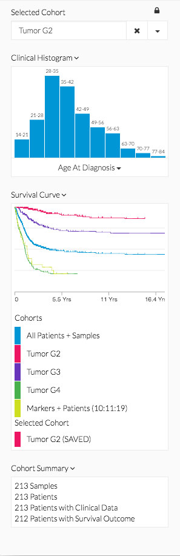

@@include('./app/partials/header.p')
<div class="content-wrapper">
    <!-- START intro seciton -->
    <div id="section-intro" class="scrollto">
        <a class="anchor" id="anchor-intro">x</a>
        <div class="container-fluid">
            <div class="svg-wrap">
                <svg width="1200" height="600" viewBox="0 0 1200 600"></svg>
            </div>
            <div class="row">
                <span class="header-homepage">Explore. Analyze. Learn.</span>
            </div>
        </div>
    </div>
    <!-- END intro seciton -->
    <!-- START sticky nav-bar -->
    <div id="header" class="header">
        <div class="subnav container">
            <a class="subnav-item col-xs-12 col-sm-2 col-sm-offset-1" href="#anchor-overview">About</a>
            <a class="subnav-item col-xs-12 col-sm-2" href="#anchor-cases">Use Cases</a>
            <a class="subnav-item col-xs-12 col-sm-2" href="#anchor-nav">Get Started</a>
            <a class="subnav-item col-xs-12 col-sm-2" href="#anchor-methods">Data</a>
            <a class="subnav-item col-xs-12 col-sm-2" href="#anchor-faq">FAQ</a>
        </div>
    </div>
    <!-- END sticky nav-bar -->
    <!-- START about seciton -->
    <div class="scrollto" id="section-overview">
        <a class="anchor" id="anchor-overview">x</a>
        <div class="container">
            <!-- Welcome -->
            <div class="row">
                <div class="col-xs-12 text-center">
                    <h3 class="about-headline fadeInDown animated">Welcome to Oncoscape.</h3>
                    <h4 class="about-headline-h4">A data visualization platform that empowers researchers to discover novel patterns and relationships between clinical and molecular data. Through a suite of interoperable tools, Oncoscape offers a unique and intuitive approach to hypothesis
                        refinement.
                    </h4>
                </div>
            </div>
            <!-- Why Oncoscape -->
            <div class="row row-centered">
                <div class="col-xs-12 col-sm-12 col-md-12 col-lg-4 col-centered box-size">
                    <h3 class="grid-h3">Iterative Analysis</h3>
                    <div class="circle1"></div>
                    <p class="grid-p">Seamlessly transfer knowledge among analytical tools. Discover new patterns and relationships by connecting diverse questions and answers. </p>
                    <a href="#section-methods" class="btn btn-outline">Learn More &rsaquo;</a>
                </div>
                <div class="col-xs-12 col-sm-12 col-md-12 col-lg-4 col-centered box-size box-line">
                    <h3 class="grid-h3">Cohort Discovery</h3>
                    <div class="circle2"></div>
                    <p class="grid-p">Easily define patient sets of interest. Build, refine, and scale cohorts based on clinical and/or molecular factors. </p>
                    <a href="#section-nav" class="btn btn-outline">Learn More &rsaquo;</a>
                </div>
                <div class="col-xs-12 col-sm-12 col-md-12 col-lg-4 col-centered box-size box-line ">
                    <h3 class="grid-h3">Interactive Visualizations</h3>
                    <div class="circle3"></div>
                    <p class="grid-p">Access data and methods through a suite of visual tools. Combine the power of analysis and discovery through the simple click of a mouse.</p>
                    <a href="#tools" class="btn btn-outline">Learn More &rsaquo;</a>
                </div>
            </div>
            <!-- Who Oncoscape -->
            <div class="row">
                <div class="col-xs-12 text-left">
                    <h4 class="header-font generalPadding">Interdisciplinary Science</h4>
                </div>
            </div>
            <hr>
            <section id="who">
                <div class="container">
                    <div class="row text-center">
                        <div class="col-md-4 generalPadding">
                            <span class="fa-stack fa-4x">
                <!--   <i class="fa fa-circle fa-stack-2x text-primary"></i> -->
                <i class="fa fa-flask fa-stack-1x fa-inverse"></i>
              </span>
                            <h4 class="service-heading">Researchers</h4>
                            <p class="text-muted">Interested in tumor progression and molecular functions for an individual patient or patients within a scalable population.
                            </p>
                        </div>
                        <div class="col-md-4 generalPadding">
                            <span class="fa-stack fa-4x">
                <!-- <i class="fa fa-circle fa-stack-2x text-primary"></i> -->
                <i class="fa fa-laptop fa-stack-1x fa-inverse"></i>
              </span>
                            <h4 class="service-heading">Bioinformaticians</h4>
                            <p class="text-muted">Interested in developing, comparing, or validating models of response for given diseases.</p>
                        </div>
                        <div class="col-md-4 generalPadding">
                            <span class="fa-stack fa-4x">
               <!--      <i class="fa fa-circle fa-stack-2x text-primary"></i> -->
               <i class="fa fa-stethoscope fa-stack-1x fa-inverse"></i>
             </span>
                            <h4 class="service-heading">Clinicians</h4>
                            <p class="text-muted">Interested in determining the best clinical treatment for a patient given their demographic and tumor molecular profile.
                            </p>
                        </div>
                    </div>
                </div>
            </section>
            <div id="tools"></div>
            <!-- What tools? -->
            <div class="row text-left">
                <div class="col-xs-12 ">
                    <h4 class="generalPadding header-font">Availabe Tools</h4>
                </div>
            </div>
            <hr>
            <div class="row">
                <ul class="photo-grid generalPadding">
                    <li class="col-xs-12 col-sm-12 col-lg-6 toolsource" role="button" tabindex="0">
                        <a href="/pca" target="_blank">
                            <div class="toolsource-btn">
                                
                                <p class="toolsource-h1">PCA</p>
                                <p class="toolsource-h2">Principle Component Analysis: two dimensional view of sample similarity.</p>
                            </div>
                        </a>
                    </li>
                    <!-- end PCA -->
                    <li class="col-xs-12 col-sm-12 col-lg-6 toolsource" role="button" tabindex="0">
                        <a class="toolsource-link" href="/markers-patients" target="_blank">
                            <div class="toolsource-btn">
                                
                                <p class="toolsource-h1">Markers + Patients</p>
                                <p class="toolsource-h2">Link copy number variation and mutation data to patients.</p>
                            </div>
                        </a>
                    </li>
                    <!-- end MP -->
                    <li class="col-xs-12 col-sm-12 col-lg-6 toolsource " role="button" tabindex="0">
                        <a class="toolsource-link" href="/timelines" target="_blank">
                            <div class="toolsource-btn">
                                
                                <p class="toolsource-h1">Timelines</p>
                                <p class="toolsource-h2">Comparative view of patient histories.</p>
                            </div>
                        </a>
                    </li>
                    <!-- end Timelines -->
                    <li class="col-xs-12 col-sm-12 col-lg-6 toolsource " role="button" tabindex="0">
                        <a class="toolsource-link" href="/survival" target="_blank">
                            <div class="toolsource-btn">
                                
                                <p class="toolsource-h1">Survival</p>
                                <p class="toolsource-h2">Kaplan Meier curves of overall survival for patient cohorts.</p>
                            </div>
                        </a>
                    </li>
                    <!-- end Survival -->
                    <li class="col-xs-12 col-sm-12 col-lg-6 toolsource " role="button" tabindex="0">
                        <a class="toolsource-link" href="/spreadsheet" target="_blank">
                            <div class="toolsource-btn">
                                
                                <p class="toolsource-h1">Spreadsheet</p>
                                <p class="toolsource-h2">Interactive table of clinical fields.</p>
                            </div>
                        </a>
                    </li>
                    <!-- end Spreadsheet -->
                </ul>
            </div>
            <div class="row text-left">
                <div class="col-xs-12">
                    <h4 class="generalPadding header-font">Datasets</h4>
                </div>
            </div>
            <hr>
            <div class="row">
                <div class="col-xs-12">
                    <p class="text-left">Oncoscape hosts <a class="methods-color" href="https://wiki.nci.nih.gov/display/TCGA/Data+level#Datalevel-RelationshipsBetweenDataTypeandDataLevel" target="_blank">level 3</a> public TCGA datasets representing gene and patient data
                        downloaded from <a class="methods-color" href="https://xenabrowser.net/datapages/?host=https://tcga.xenahubs.net" target="_blank">UCSC Xena.</a> To review this data in depth visit our <a class="methods-color" href="http://resources.sttrcancer.org/api"
                            target="_blank">data API. </a>User planning to publish on the provided data must adhere to all publishing guideline set by the <a class="methods-color" href="https://cancergenome.nih.gov/publications/publicationguidelines" target="_blank">NIH</a>.
                        Datasets in Oncoscape are classified by disease type according to TCGA studies. </p>
                </div>
            </div>
            <div class="row">
                <div class="col-xs-12">
                    <p class="text-left"></p>
                </div>
            </div>
            <div class="row">
                <ul class="photo-grid generalPadding">
                    <li class="col-xs-12 col-sm-12 col-lg-6 toolsource" role="button" tabindex="0">
                        <a href="http://resources.sttrcancer.org/api/#brain-lower-grade-glioma-amp-glioblastoma-multiforme" target="_blank">
                            <div class="toolsource-btn">
                                
                                <p class="toolsource-h1">Brain</p>
                                <p class="toolsource-h2">Unique Samples: 1126</p>
                                <p class="toolsource-h2">Unique Patient: 1105</p>
                            </div>
                        </a>
                    </li>
                    <!-- end brain -->
                    <li class="col-xs-12 col-sm-12 col-lg-6 toolsource" role="button" tabindex="0">
                        <a class="toolsource-link" href="http://resources.sttrcancer.org/api/#lung-lung-adenocarcinoma-amp-lung-squamous-cell-carcinoma" target="_blank">
                            <div class="toolsource-btn">
                                
                                <p class="toolsource-h1">Lung</p>
                                <p class="toolsource-h2">Unique Samples: 1194</p>
                                <p class="toolsource-h2">Unique Patient: 1079</p>
                            </div>
                        </a>
                    </li>
                    <!-- end lung -->
                    <li class="col-xs-12 col-sm-12 col-lg-6 toolsource" role="button" tabindex="0">
                        <a class="toolsource-link" href="http://resources.sttrcancer.org/api/#brca-breast-invasive-carcinoma" target="_blank">
                            <div class="toolsource-btn">
                                
                                <p class="toolsource-h1">Breast</p>
                                <p class="toolsource-h2">Unique Samples: 1230</p>
                                <p class="toolsource-h2">Unique Patient: 1100</p>
                            </div>
                        </a>
                    </li>
                    <!-- end breast -->
                    <li class="col-xs-12 col-sm-12 col-lg-6 toolsource" role="button" tabindex="0">
                        <a class="toolsource-link" href="http://resources.sttrcancer.org/api/#hnsc-head-and-neck-squamous-cell-carcinoma" target="_blank">
                            <div class="toolsource-btn">
                                
                                <p class="toolsource-h1">Head + Neck</p>
                                <p class="toolsource-h2">Unique Samples: 575</p>
                                <p class="toolsource-h2">Unique Patient: 529</p>
                            </div>
                        </a>
                    </li>
                    <!-- end headneck -->
                    <li class="col-xs-12 col-sm-12 col-lg-6 toolsource" role="button" tabindex="0">
                        <a class="toolsource-link" href="http://resources.sttrcancer.org/api/#hnsc-head-and-neck-squamous-cell-carcinoma" target="_blank">
                            <div class="toolsource-btn">
                                
                                <p class="toolsource-h1">Prostate</p>
                                <p class="toolsource-h2">Unique Samples: 552</p>
                                <p class="toolsource-h2">Unique Patient: 449</p>
                            </div>
                        </a>
                    </li>
                    <!-- end prostate -->
                </ul>
            </div>
            <!-- environments -->
            <div class="row text-left">
                <div class="col-xs-12">
                    <h4 class="generalPadding header-font">Developers</h4>
                </div>
            </div>
            <hr>
            <div class="row">
                <div class="col-xs-12">
                    <p class="text-left">Interested in contributing new methods or visualizations? A version of Oncoscape exist for that! Please visit our<a class="methods-color" href="https://dev.oncoscape.sttrcancer.io/#/" target="_blank"> development </a> site to view
                        upcoming features or discover areas to contribute. Oncoscape is an open source project hosted on <a class="methods-color" href="https://github.com/FredHutch/Oncoscape" target="_blank">GitHub</a> that utlizes many other open source
                        project such as Docker, MongoDB and Kong API.</p>
                </div>
                <div class="row">
                    <div class="col-xs-12">
                        <header class="dev-tools">
                            <a href="https://github.com/FredHutch/Oncoscape" target="_blank" target="new" title="Github">
                                 </a>
                            <a href="https://www.docker.com/" target="new" title="Docker">  </a>
                            <a href="https://www.mongodb.com/" target="new" title="MongoDB"> </a>
                            <a href="https://getkong.org/" target="new" title="Kong API">  </a>
                        </header>
                    </div>
                </div>
            </div>
            <div class="row text-left">
                <div class="col-xs-12">
                    <h4 class="generalPadding header-font">Acknowledgements</h4>
                </div>
            </div>
            <hr>
            <p class="text-left">Oncoscape is developed at the <a class="methods-color" href="https://www.fredhutch.org/en.html">Fred Hutchinson Cancer Research Center</a> under the auspices of the <a class="methods-color" href="https://www.sttrcancer.org/en.html">Seattle Translational Tumor Research initiative.</a>                </p>
        </div>
    </div>
    <!-- END Overview seciton -->
    <!-- START Use Cases seciton -->
    <div class="scrollto" id="section-cases">
        <a class="anchor" id="anchor-cases">x</a>
        <div class="container">
            <div class="row">
                <div class="col-xs-12 text-center">
                    <h3 class="section-headline fadeInDown animated">Use Cases</h3>
                </div>
            </div>
            <section class="videoCurrent col-xs-12 col-md-7">
                <div class="videoPlayerContainer">
                    <iframe class="videoPlayer" width="560" height="315" frameborder="0" allowfullscreen></iframe>
                </div>
                <h3 class="videoCurrentTitle"></h3>
                <p class="videoCurrentTranscript"></p>
            </section>
            <section class="videos noselect col-xs-12 col-md-5">
                <article class="video">
                    <div class="videoThumb" style="background-image: url(/style/mpNavigation/videotwo.png);"></div>
                    <a class="videoLink" href="https://www.youtube.com/embed/nKDk2V-Ia8s?rel=0&amp;controls=1&amp;showinfo=0"></a>
                    <h4 class="videoTitle">Oncoscape Cohorts</h4>
                    <p class="videoParagraph">Watch how to select, transfer and save Oncoscape cohorts.</p>
                    <section class="videoTranscript">
                        <ol class="video-ol">
                            <div class="li-margin">
                                <li>Click Get Started.</li>
                                <li>Choose a disease set. Example: Brain.</li>
                                <li>Select a tool. Example:Markers + Patients.</li>
                                <li>Once in Markers + Patients zoom in using mouse or trackpad.</li>
                                <li>Using the <em>Search</em> box select a patient or gene or choice and hit Enter. Example: BRAF.</li>
                                <li>Click "Show Edges of Selected".</li>
                                <li>The edge connecting the BRAF selection and the patients will be shown.</li>
                                <li>Click "Select Connected Nodes". Patients will now be highlighted.</li>
                                <li>To view the demographics of this population use the cohorts dropdown menu on the left control bar.</li>
                                <li>To save, click the "+" button.</li>
                                <li>Name the cohort and click "Done".</li>
                                <li>The BRAF cohort is now saved and can be pushed to the other tools.</li>
                                <li>In the header find the <em>Analysis Tools</em> dropdown menu and select a new tool. Example: Survival Curves.</li>
                                <li>Selection in survival can be toggled on or off.</li>
                                <li>Push to Timelines.</li>
                                <li>Push Cohorts will show in grey. To view the select closer zoom by using the grey "Click + Drag" bars on the side.</li>
                            </div>
                        </ol>
                    </section>
                </article>
            </section>
        </div>
    </div>
    <!-- END Use Cases seciton -->
    <!-- START Nav seciton -->
    <div class="scrollto" id="section-nav">
        <a class="anchor" id="anchor-nav">x</a>
        <div class="container">
            <div class="row">
                <div class="col-xs-12 text-center">
                    <h3 class="section-headline fadeInDown animated">Get Started</h3>
                </div>
            </div>
            <div class="row">
                <div class="col-xs-12">
                    <p class="cohort-statement text-left">The power of Oncoscape lies in the ability to create and move cohorts through the various tools.</p>
                    <p class="text-left">Creating a saved cohort is easy. On the left side of all tools is the cohort panel. All functions related to cohorts are preformed here. Summaries for the various sections are below. It is important to note that as cohorts are selected
                        and toggled between the clinical histograms, survival curves and summaries will update.</p>
                </div>
            </div>
            <br>
            <div class="row">
                <div class="col-xs-12 col-sm-12 col-md-4 col-lg-4 text-left">
                    
                </div>
                <div class="col-xs-8 text-left cohort-descriptions">
                    <p class="cohort-descriptions-1"><strong>Selected Cohort:</strong> Add, edit or delete cohorts. Click the "+" to save, "x" to delete or click the down arrow to select a cohort for edits.</p>
                    <p class="cohort-descriptions-2"><strong>Clinical Histogram:</strong> Snapshot of clinical information, per cohort. The histogram will adjust with each cohort selection.Click the down arrow to view other filters. &nbsp; e.g. &nbsp; Age At Diagnosis, Gender, Race,
                        Ethnicity, Vital, Tumor.</p>
                    <p class="cohort-descriptions-3"><strong>Survival Curve:</strong> Snapshot of Kaplan Meier survival curves, per cohort. For more in depth analysis push the saved cohorts to the survival tool.</p>
                    <p class="cohort-descriptions-4"><strong>Cohorts:</strong> All saved cohorts are listed in this area. Each cohort is clickable and will highlight the selections on the main window, as well as adjust any survival curves or clinical histograms that are associated. The
                        last line will always show your current selection, which will also update in the <strong>Selected Cohort</strong> box at the top of the cohort panel.</p>
                    <p class="cohort-descriptions-5"><strong>Cohort Summary:</strong> Every cohort includes a summary of available information based on patients and samples.</p>
                </div>
            </div>
            <br>
            <div class="row text-left">
                <div class="col-xs-12">
                    <h4 class="generalPadding header-font">Transfer Cohorts</h4>
                </div>
            </div>
            <hr>
            <p class="text-left"><strong>Transfer cohorts at the click of a button.</strong></p>
            <p class="text-left">Once cohorts have been created it is easy to move them to different tools for additional analysis. In the main header find the <em>Analysis Tools</em> button and select a new tool. The left cohort panel will appear in each tool. Additional
                help for individual tools can be found in the <a href="#tools">Available Tools</a> section.</p>
            <p class="text-left"></p>
            <!-- scroll and container end -->
        </div>
    </div>
    <!-- START faq seciton -->
    <!-- START Nav seciton -->
    <div class="scrollto" id="section-methods">
        <a class="anchor" id="anchor-methods">x</a>
        <div class="container">
            <div class="row">
                <div class="col-xs-12 text-center">
                    <h3 class="section-headline fadeInDown animated">Data</h3>
                </div>
            </div>
            <div class="row">
                <div class="col-xs-12">
                    <p class="text-left">All genesets used in Oncoscape can be viewed at <a class="methods-color" href="http://resources.sttrcancer.org/api/#genesets-details" target="_blank">Geneset Details.</a></p>
                </div>
            </div>
            <div class="row">
                <div class="col-xs-12">
                    <p class="text-left">Oncoscape's data is based on a gene/patient relationship as defined: “non-silent somatic mutation (nonsense, missense, frame-shift indels, splice site mutations, stop codon readthroughs, change of start codon, inframe indels) was identified
                        in the protein coding region of a gene, or any mutation identified in a non-coding gene”. Credit to <a class="methods-color" href="http://xena.ucsc.edu/how-we-characterize-mutations/">Xena UCSC</a>.</p>
                </div>
            </div>
        </div>
    </div>
    <!-- START faq seciton -->
    <div class="scrollto" id="section-faq">
        <a class="anchor" id="anchor-faq">x</a>
        <div class="container">
            <div class="row">
                <div class="col-xs-12 text-center">
                    <h3 class="section-headline fadeInDown animated">Frequently Asked Questions</h3>
                </div>
            </div>
            <div class="container">
                <div id="divlist">
                    <a class="methods-color" role="button" data-toggle="collapse" data-target="#collapse-1">What tools have export features?</a>
                    <div id="collapse-1" class="collapse">
                        <p class="collapse-para">Currently, the export feature is only available on the Spreadsheet tool. Users can push saved cohorts to the spreadsheet tool by clicking the the Analysis Tool button at the top of the screen. Once there click the <em>Export</em>                            button. An Excel file will get generated.
                        </p>
                    </div>
                    <hr>
                    <a class="methods-color" role="button" data-toggle="collapse" data-target="#collapse-2">How is data saved for return visits?</a>
                    <div id="collapse-2" class="collapse">
                        <p class="collapse-para">All data for selections and cohorts will be automatically saved for a return visit assuming users are on the same computer to login. User logins that allow stored sessions from any device will be deployed in a future release.
                        </p>
                    </div>
                    <hr>
                    <a class="methods-color" role="button" data-toggle="collapse" data-target="#collapse-3">How to contact the Oncoscape team directly?</a>
                    <div id="collapse-3" class="collapse">
                        <p class="collapse-para">On the homepage header, click the contact link, fill out the form and someone from the Oncoscape team will contact you shortly.
                        </p>
                    </div>
                </div>
            </div>
        </div>
    </div>
    <!-- END faq seciton -->
</div>
<!-- END wrapper -->
@@include('./app/partials/footer.p')